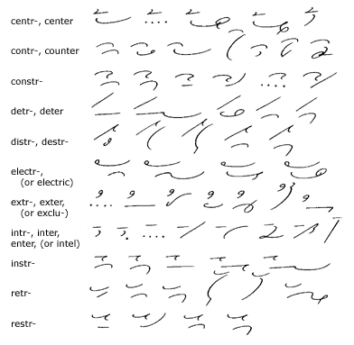
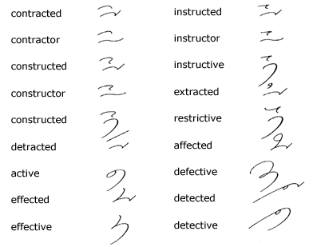
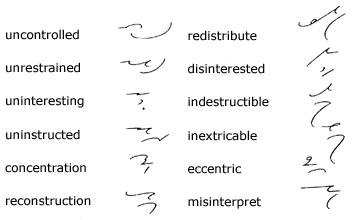
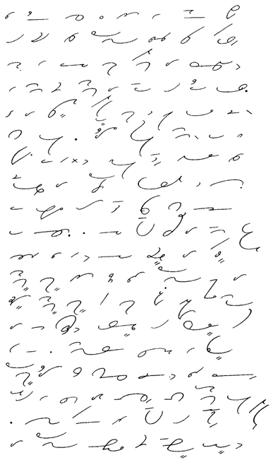

CHAPTER X
Unit 28
Analogical Word-Beginnings—Disjoined
209. Certain
prefixes or letters are disjoined to express tr and a
following vowel. The prefix is placed above the line, very
close to the remainder of the word.

210. Key
to Analogical Word-Beginnings
1. central, center,
centralize, centralization, centrifugal.
2. contract, contrary, control, contribute,
contrast, counterpart, countersign.
3. construct, construction, constrain,
constraint, construe, construed.
4. detriment, detrimental, deteriorate,
detract, detraction.
5. destroy, distribute, distribution,
distract, distraction.
6. electric, electrical, electrolysis,
electric light.
7. extra, extreme, extraordinary, exterior,
extricate, exclusive, exclamation.
8. interest, interesting, enter, entered,
entertain, interfere, introduce, intelligence.
9. instruct, instruction, instrument,
instruments, instrumental.
10. retreat, retract, retraction, retribution,
retrieve, retrogression.
11. restrain, restraint, restrict, restriction.
211.
In forming the derivatives of words ending in ct,
as in contract, it is not necessary to disjoin to express
ed, or, er, or ive. The
t is omitted in the primitive form (under the rules given
in Chapter VIII), and also in its
derivatives:

Analogical Word-Beginnings—Compounds
212. Some
very useful forms are obtained by joining simple syllable characters,
such as in, un, dis, re, and
non, to the signs for disjoined word-beginnings:

213. Reading
and Dictation Practice

Transcription Key to this
Unit
- Next Unit - |